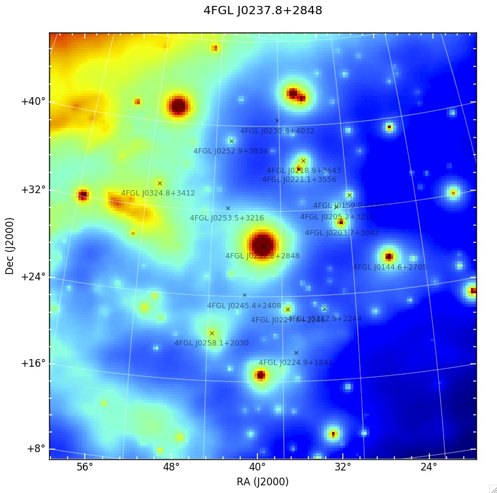

Fermi LAT Light Curve Repository (LCR)
About the Light Curve Repository

Figure 1: A model map for a single time bin of the region surrounding 4FGL J0237.8+2848, which contains 15 other variable sources within a 12 deg radius, highlighting the need to model all variable sources within the region surrounding the source of interest.
Motivation:
The Fermi Large Area Telescope (LAT) Light Curve Repository (LCR) is a database of multi-cadence flux calibrated light curves for over 1300 sources deemed variable in the 10 year Fermi LAT point source (4FGL) catalog (Abdollahi et al. 2020). The light curves hosted by the LCR cover the entire ongoing Fermi mission duration and include data binned at 3 day, 1 week, and 1 month intervals and are continually updated as new data becomes available. The high duty cycle and long-term monitoring of the gamma-ray sky has made the LAT an important tool in the study of time-domain astronomy, provided the identification and regular monitoring of thousands of transient and variable sources. The LCR is intended to serve as a resource to the time-domain and multi-messenger communities by allowing users to quickly search the LAT data to identify correlated variability and flaring emission episodes from gamma-ray sources.
Sample Selection:
The LCR provides light curves for all sources in the 4FGL catalog that exhibit a variability index greater than 18.49, where the variability index can be thought of as a proxy to the average fractional variability with dF/F measured on timescales of 1 year. As defined in the 4FGL catalog, sources with a variability index greater than 18.48 over 12 intervals are estimated to have a < 1% chance of being a steady source. The resulting sample consists of 1327 sources, or roughly 26% of the 4FGL catalog. A vast majority of these sources are blazars, with flat spectrum radio quasars, BL Lacs, and blazars candidates of unknown type making up roughly 40%, 30%, and 24% of the repository sample respectively. Generating 3 day, 1 week, and 1 month light curves for each of these sources for over 11 years of data requires the analysis of over 2.7 million individual time bins.
Analysis Technique:
The characterization of LAT sources is typically performed using a maximum likelihood analysis (Abdo et al. 2009, ApJS, 183, 46), in which a model describing the point sources and diffuse and isotropic gamma-ray emission in a given region of the sky are jointly optimized to best describe the observed count distribution. The flux determinations in the light curves provided by the LCR are obtained by performing an unbinned likelihood analysis, in which the full spatial and spectral information of each count is used in the maximum likelihood optimization. The analysis is performed using the P8_SOURCE event selection over an energy range covering 100 MeV - 100 GeV.
Figure 1 shows a model map for a single time bin of the region surrounding 4FGL J0237.8+2848, which contains 15 other variable sources within a 12 deg radius (roughly correseponding to the 95% LAT PSF at 100 MeV). The source flux for each time bin is fit while simultaneously accounting for the flux variations from all of the other variable sources within the region of interest, which are left free to vary in the model of the region. An iterative fitting strategy, which varies the required fit tolerance, is also employed to minimize the number of bins in which the likelihood fit does not successfully convergence. The resulting best fit flux determination (or upper limit) and spectral shape are reported by the LCR.
For a relatively small number of counts, an unbinned likelihood analysis can be performed rapidly, but as the number of counts increases, the time to perform the analysis can become prohibitive. This limitation becomes increasingly burdensome when the need arises to perform source characterization over a large number of time bins. Binned likelihood analysis can help alleviate some of these issues, but since information is lost when binning data, there exists a trade off between between the number of bins to use (e.g. computing time) and the accuracy of the final results. The LCR tackles the computational overhead by parallelizing the process of performing a full unbinned likelihood analysis. In order to produce a high cadence light curve over the entire lifetime of the mission in a reasonable amount of time, the LCR distributes the analysis of each light curve bin to a separate node in a computer cluster hosted at the SLAC National Accelerator Center. The parallelization allows for thousands of time bins to be analyzed simultaneously, with the net effect of drastically reducing the time it takes to generate mission duration light curves. Figure 2 shows the resulting 3-day light curve covering over 11 years of LAT data for the source 4FGL J0237.8+2848.
Figure 2: An example 3-day light curve covering over 11 years of LAT data for the source 4FGL J0237.8+2848 at the center of Figure 1.
Analysis Details:
The Light Curve Repository versus the Fermi All-Sky Variability Analysis
The LCR is based on the successful Fermi All-sky Variability Analysis (FAVA), which has been extremely effective at identifying transient sources in the LAT data. FAVA is a photometric technique that searches for flaring sources by comparing the observed flux from a region of the sky to the expected flux based on the observed long-term average emission collected over the course of the Fermi mission. This analysis has the advantage of being independent of any model for the diffuse gamma-ray emission and does make any assumptions about the spectral shape of the gamma-ray sources as is required in a traditional likelihood analysis. Although very effective at detecting flaring emission, FAVA is less effective for the long-term characterization of a source, especially for those near other variable sources. Because of the large PSF of the LAT (as much as a 12° 95% containment radius at 100 MeV when using P8R3_SOURCE_V2) care must be taken in interpreting emission excesses at a particular location in the sky, as emission from a nearby flaring source will be detected over a large region of the sky. The LCR provides light curves generated through a full likelihood analysis of the source and surrounding region, providing calibrated flux and photon index measurements for each time bin that take into account variability from nearby sources. Therefore, while FAVA is an effective flare detection method, the LCR is intended to be a resource for long baseline source characterization.
Credits:
The LCR is currently maintained by Daniel Kocevski (NASA MSFC), with analysis assistance from Jean Ballet (CEA Saclay) and Benoit Lott (CNRS/IN2P3, Université de Bordeaux). The website interface was designed by Daniel Kocevski, using the Highcharts and D3-Celestial javascript plotting libraries, and the Bootstrap toolkit.
Further Reading:
Fermi Large Area Telescope Fourth Source Catalog - Abdollahi et al. 2020, ApJS, 247, 33A
The Fermi LAT Cicerone - Abdollahi et al. 2017 ApJ, 846 34
An Unbinned Likelihood Tutorial - A full tutorial on the use of unbinned likelihood analysis to analyze Fermi LAT data.
The Fermi Large Area Telescope (LAT) Light Curve Repository (LCR) is a database of multi-cadence flux calibrated light curves for over 1300 sources deemed variable in the 10 year Fermi LAT point source (4FGL) catalog (Abdollahi et al. 2020). The light curves hosted by the LCR cover the entire ongoing Fermi mission duration and include data binned at 3 day, 1 week, and 1 month intervals and are continually updated as new data becomes available. The high duty cycle and long-term monitoring of the gamma-ray sky has made the LAT an important tool in the study of time-domain astronomy, provided the identification and regular monitoring of thousands of transient and variable sources. The LCR is intended to serve as a resource to the time-domain and multi-messenger communities by allowing users to quickly search the LAT data to identify correlated variability and flaring emission episodes from gamma-ray sources.
Sample Selection:
The LCR provides light curves for all sources in the 4FGL catalog that exhibit a variability index greater than 18.49, where the variability index can be thought of as a proxy to the average fractional variability with dF/F measured on timescales of 1 year. As defined in the 4FGL catalog, sources with a variability index greater than 18.48 over 12 intervals are estimated to have a < 1% chance of being a steady source. The resulting sample consists of 1327 sources, or roughly 26% of the 4FGL catalog. A vast majority of these sources are blazars, with flat spectrum radio quasars, BL Lacs, and blazars candidates of unknown type making up roughly 40%, 30%, and 24% of the repository sample respectively. Generating 3 day, 1 week, and 1 month light curves for each of these sources for over 11 years of data requires the analysis of over 2.7 million individual time bins.
Analysis Technique:
The characterization of LAT sources is typically performed using a maximum likelihood analysis (Abdo et al. 2009, ApJS, 183, 46), in which a model describing the point sources and diffuse and isotropic gamma-ray emission in a given region of the sky are jointly optimized to best describe the observed count distribution. The flux determinations in the light curves provided by the LCR are obtained by performing an unbinned likelihood analysis, in which the full spatial and spectral information of each count is used in the maximum likelihood optimization. The analysis is performed using the P8_SOURCE event selection over an energy range covering 100 MeV - 100 GeV.
Figure 1 shows a model map for a single time bin of the region surrounding 4FGL J0237.8+2848, which contains 15 other variable sources within a 12 deg radius (roughly correseponding to the 95% LAT PSF at 100 MeV). The source flux for each time bin is fit while simultaneously accounting for the flux variations from all of the other variable sources within the region of interest, which are left free to vary in the model of the region. An iterative fitting strategy, which varies the required fit tolerance, is also employed to minimize the number of bins in which the likelihood fit does not successfully convergence. The resulting best fit flux determination (or upper limit) and spectral shape are reported by the LCR.
For a relatively small number of counts, an unbinned likelihood analysis can be performed rapidly, but as the number of counts increases, the time to perform the analysis can become prohibitive. This limitation becomes increasingly burdensome when the need arises to perform source characterization over a large number of time bins. Binned likelihood analysis can help alleviate some of these issues, but since information is lost when binning data, there exists a trade off between between the number of bins to use (e.g. computing time) and the accuracy of the final results. The LCR tackles the computational overhead by parallelizing the process of performing a full unbinned likelihood analysis. In order to produce a high cadence light curve over the entire lifetime of the mission in a reasonable amount of time, the LCR distributes the analysis of each light curve bin to a separate node in a computer cluster hosted at the SLAC National Accelerator Center. The parallelization allows for thousands of time bins to be analyzed simultaneously, with the net effect of drastically reducing the time it takes to generate mission duration light curves. Figure 2 shows the resulting 3-day light curve covering over 11 years of LAT data for the source 4FGL J0237.8+2848.
Figure 2: An example 3-day light curve covering over 11 years of LAT data for the source 4FGL J0237.8+2848 at the center of Figure 1.
Analysis Details:
| Time bins | 3 day, 1 week, and 1 month |
| Energy bin | 100 MeV - 100 GeV |
| Event selection | P8_SOURCE |
| Instrument response function | P8R3_SOURCE_V2 |
| Galactic interstellar emission model | gll_iem_v06.fits |
| Isotropic spectral template | iso_P8R3_SOURCE_V2 |
| 4FGL catalog | gll_psc_v20.fit |
The LCR is based on the successful Fermi All-sky Variability Analysis (FAVA), which has been extremely effective at identifying transient sources in the LAT data. FAVA is a photometric technique that searches for flaring sources by comparing the observed flux from a region of the sky to the expected flux based on the observed long-term average emission collected over the course of the Fermi mission. This analysis has the advantage of being independent of any model for the diffuse gamma-ray emission and does make any assumptions about the spectral shape of the gamma-ray sources as is required in a traditional likelihood analysis. Although very effective at detecting flaring emission, FAVA is less effective for the long-term characterization of a source, especially for those near other variable sources. Because of the large PSF of the LAT (as much as a 12° 95% containment radius at 100 MeV when using P8R3_SOURCE_V2) care must be taken in interpreting emission excesses at a particular location in the sky, as emission from a nearby flaring source will be detected over a large region of the sky. The LCR provides light curves generated through a full likelihood analysis of the source and surrounding region, providing calibrated flux and photon index measurements for each time bin that take into account variability from nearby sources. Therefore, while FAVA is an effective flare detection method, the LCR is intended to be a resource for long baseline source characterization.
Credits:
The LCR is currently maintained by Daniel Kocevski (NASA MSFC), with analysis assistance from Jean Ballet (CEA Saclay) and Benoit Lott (CNRS/IN2P3, Université de Bordeaux). The website interface was designed by Daniel Kocevski, using the Highcharts and D3-Celestial javascript plotting libraries, and the Bootstrap toolkit.
Further Reading:
Fermi Large Area Telescope Fourth Source Catalog - Abdollahi et al. 2020, ApJS, 247, 33A
The Fermi LAT Cicerone - Abdollahi et al. 2017 ApJ, 846 34
An Unbinned Likelihood Tutorial - A full tutorial on the use of unbinned likelihood analysis to analyze Fermi LAT data.